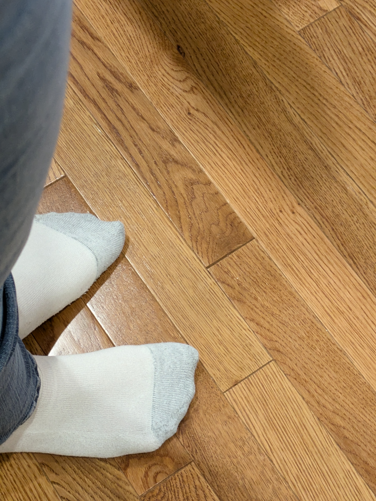

Standing at attention starts with the feet and goes all the way to your head. Standing at attention helps to make sure that the marching is clean. If you’re not constantly at attention before you march your moves will be sloppy and it will be more difficult to march. There are two ways to be at attention. With a horn up and with horns down. Horns down helps get the feel for how you should carry yourself. With a horn up it can make marching easier and helps keep your balance. Marching.com has a great checklist to follow. It explains feet, knees, hips, back, chest, shoulders, neck, chin, eyes, and arms. The website states “consistency and detail of teaching is the key, not necessarily the style choices that you make” (Young 2009). This is a huge key when standing at attention.

Let's Get Started
Mark time allows you to keep on track when you are not marching. When you are marking time it helps to count in your head to make sure you are on the correct foot. Being on the correct step allows you to take that first step when the time comes. When you are marching in place your heel should come up on a number and down on the word and. When marking time it helps to think about what you need to do next so you’re not late. The instrumentalist says “pulse is key” (Green, Trey 2020). This is exactly what you’re doing when marking time.
When taking your first step it is important to start on your left foot. This allows you to easily come to an end when the time is right. It is very important to roll step when you begin to march so you do not hurt yourself. The band director website has a great how to when completing your first step. It states “plant your heel with your toes raised as if you had Hi Mom on the bottom of your shoe” (Band Directors Media Group). The first step sets the tone for the rest of the moves. How you step off gives a good indication if the song is fast or slow and what direction you’re going.
Instruments Up
Learning the different instruments helps set up where they will move when marching. It is important to know what instruments are involved to make the best music possible. Love to know website tells each instrument and what they do. They put it best when saying “thanks to the unique instrumentation and talented musicians who play them, they not only bring outstanding music to events but also charisma and fun” (McDermott 2024). These instruments bring the sound to life and it is important to know what each does. This allows the each instrument to be used in a variety of ways.